норма
«Норму» придумали двое бывших фрилансеров, уставших собирать доходы по заметкам, чекам и банковским приложениям. Отсюда характер продукта: спокойный и прямой, без банковского пафоса. Самозанятым здесь нужны три вещи в одном окне: выставить счёт, получить оплату и заплатить налог.
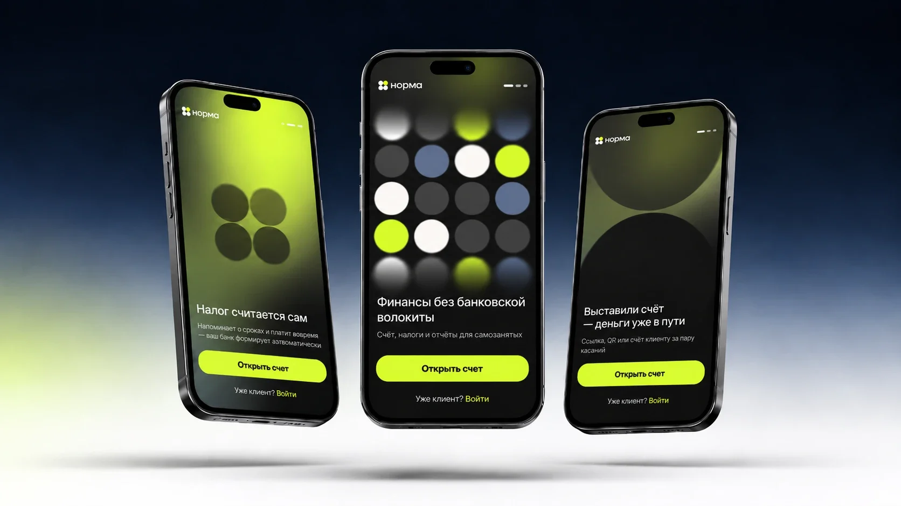
- задача:
- доработать дизайн-систему, сократить путь пользователя, не усложнять визуал
- результат:
- переработан UI-kit и user flow, 20+ готовых фреймов, дополнительно разработан логобук
- срок:
- 3 недели, 2026
концепт
Дизайн-систему «Нормы» я доработала, а не пересобрала: сократила лишние шаги в сценариях. Лаймовый акцент и строгую финансовую логику сохранила — теперь они одинаково работают на всех экранах. Считываемость держат тёмные поверхности, крупная типографика и мягкие градиенты.
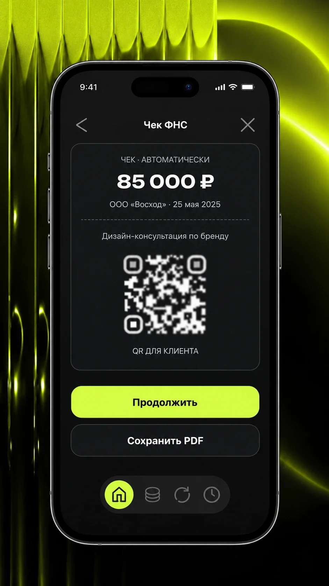
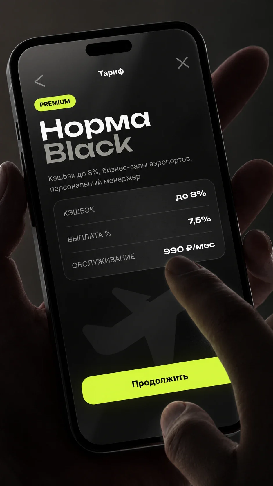
палитра
Четыре цвета работают как компактная дизайн-система: лайм остаётся единственным акцентом на статус и действие, тёмно-серый держит структуру интерфейса, а светлые оттенки берут на себя фон и паузы между блоками. Такой ограниченный набор легко масштабировать на новые экраны без потери узнаваемости.
#4F4F51 51%
#E7E6DF 42%
#D4FC46 5%
#636A83 2%
логобук
Логотип собран из простых модулей и поддерживает характер продукта — технологичный, точный и дружелюбный. Знак и написание сохраняют читаемость как в интерфейсе, так и в рекламных материалах.
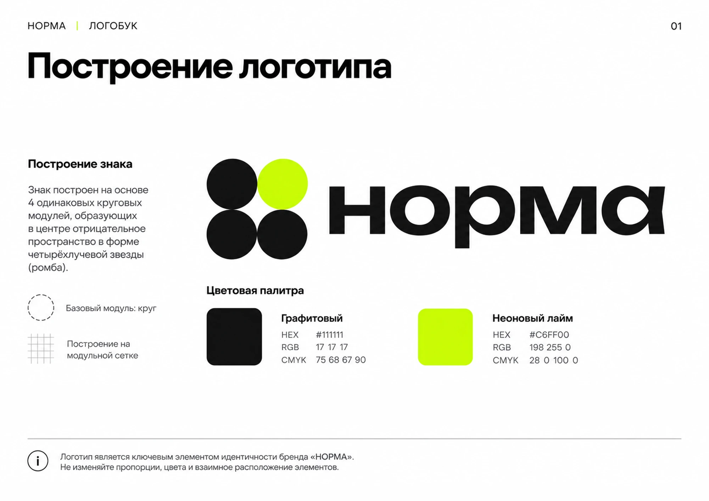
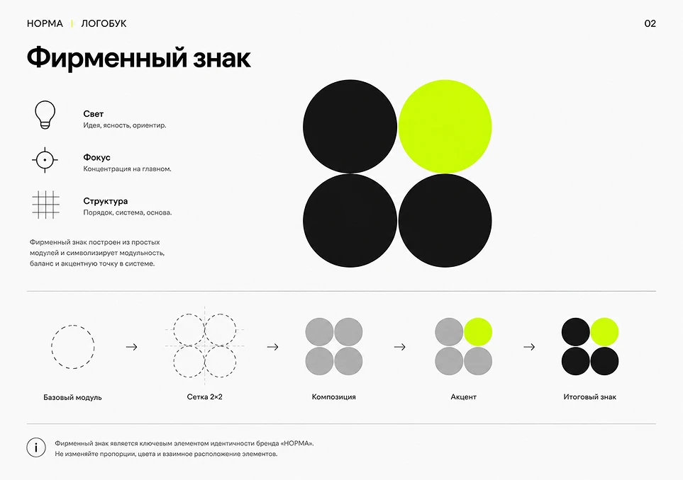
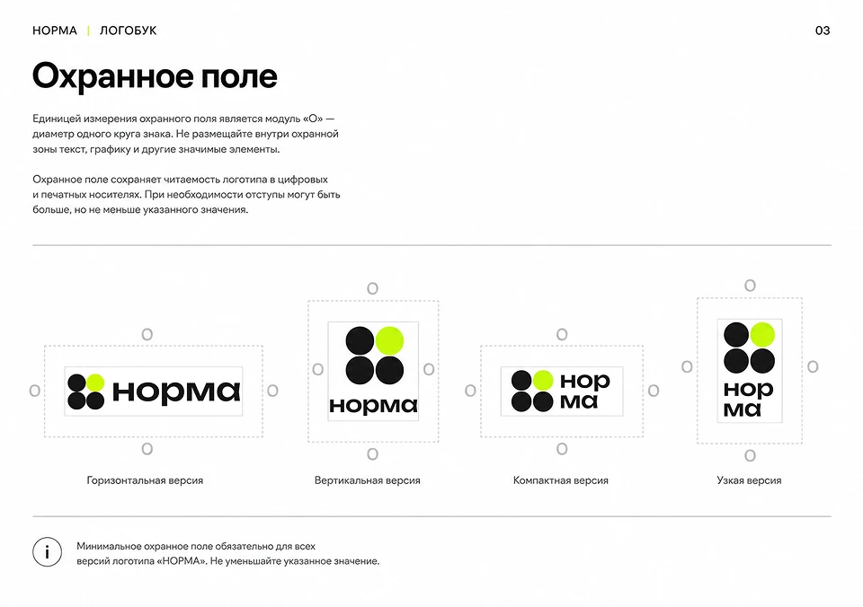
user flow
Прежде чем перерисовывать экраны, я собрала карту всего пути пользователя: вход, онбординг с проверкой статуса самозанятого, главный экран и пять основных сценариев — от приёма оплаты до профиля и поддержки. В каждом сценарии остались только шаги, которые меняют результат: самозанятый создаёт счёт, отправляет его клиенту и сразу видит, прошла ли оплата.
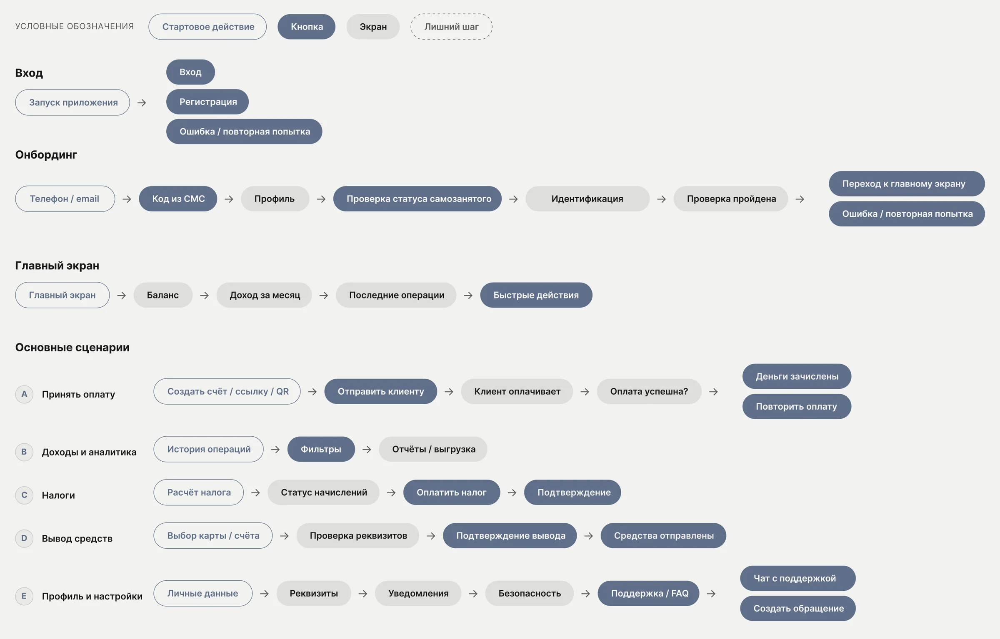
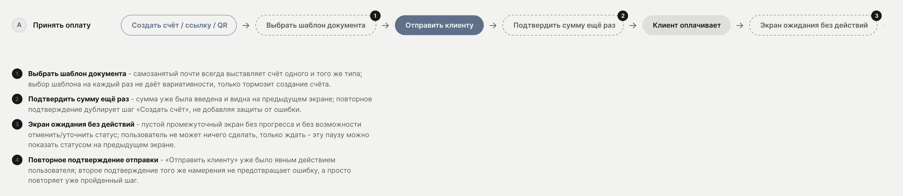
скелетоны
Для всех десяти экранов есть состояния загрузки. Форма и пропорции блоков повторяют реальный интерфейс, чтобы при подгрузке данных экран не прыгал, а пользователь заранее видел, где появятся баланс, суммы и кнопки.
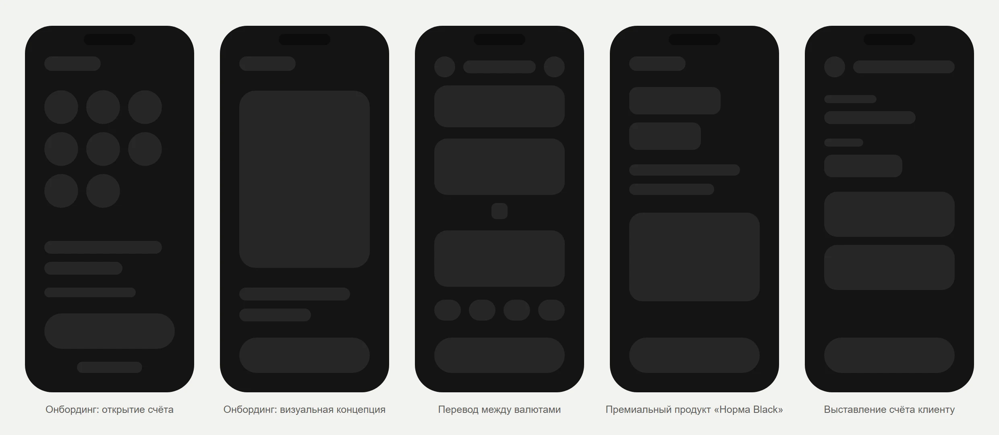
экраны
Интерфейс объединён единой дизайн-системой: ключевые действия выделены лаймовым цветом, а суммы и статусы быстро считываются. Экраны показывают основные сценарии — от входа и главной до накоплений, вкладов, переводов и подтверждения операций.
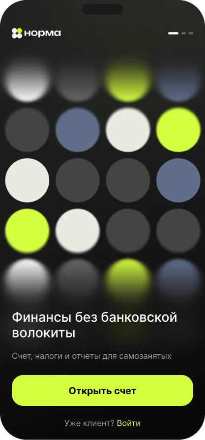
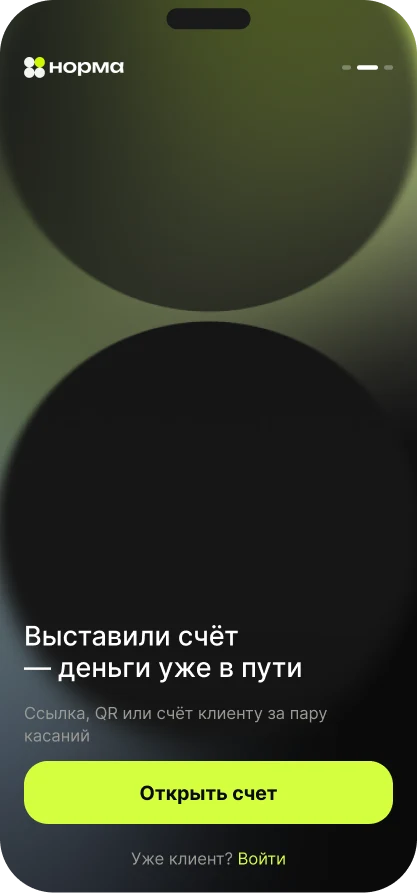
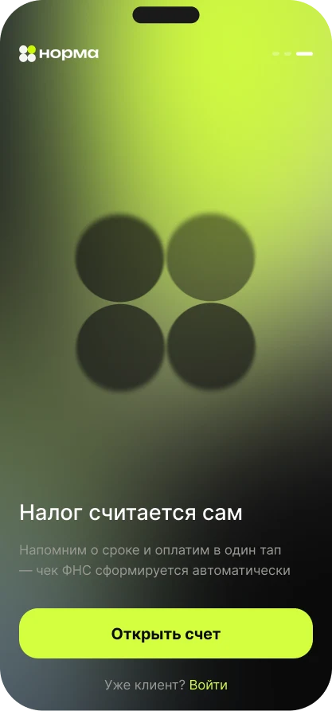
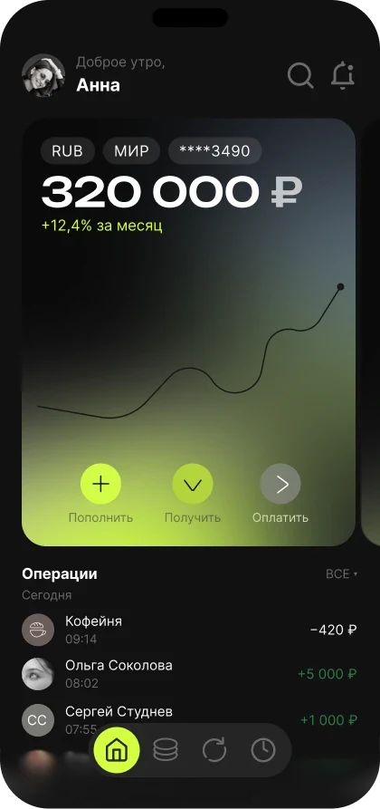
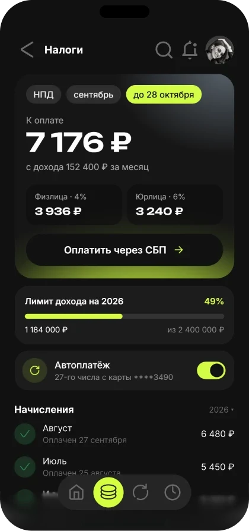
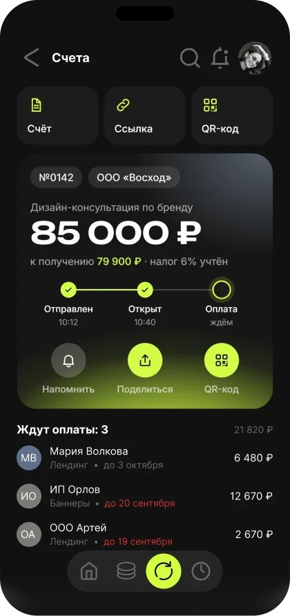
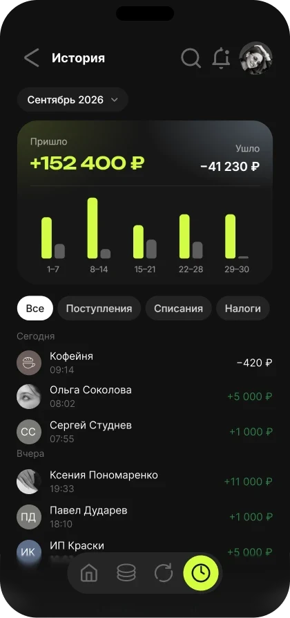
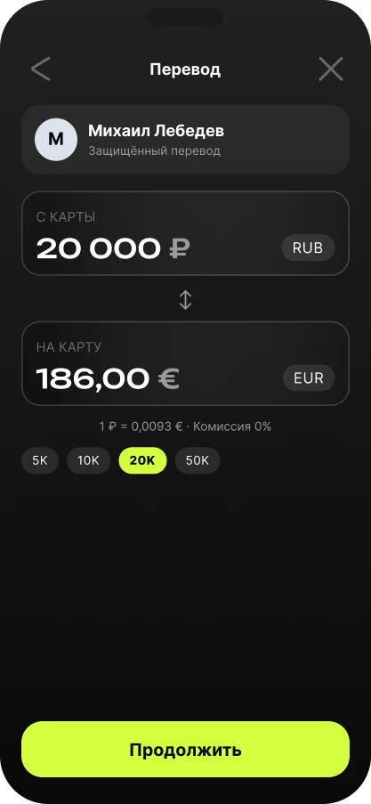
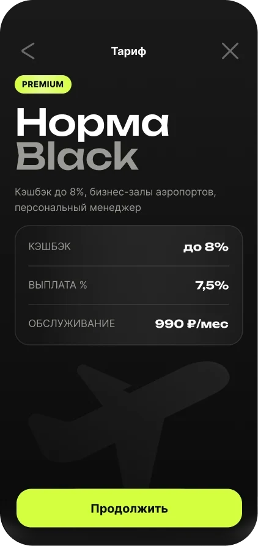
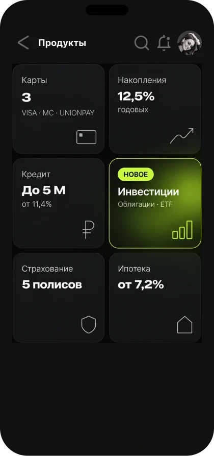
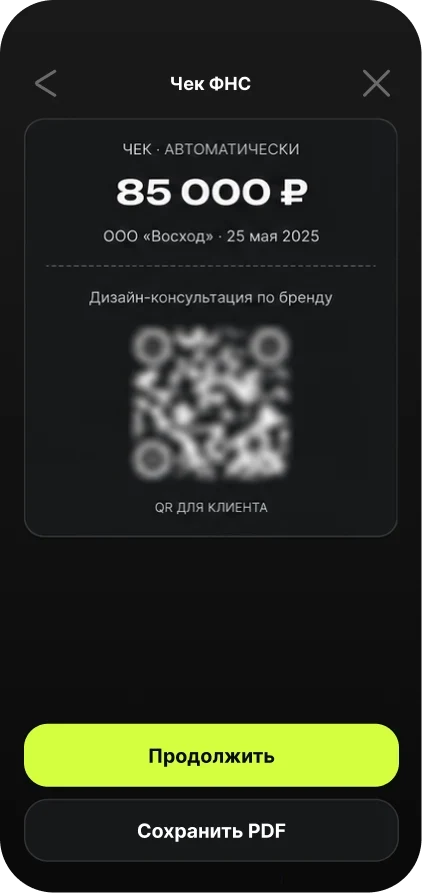
мерч
Знак проверила за пределами экрана — на брелоке, бейджах команды, металлическом значке и футболках. Четыре круга узнаются и в одном цвете на матовом пластике, и в мелком размере на груди футболки, а лаймовый круг остаётся единственным акцентом, как и в интерфейсе.
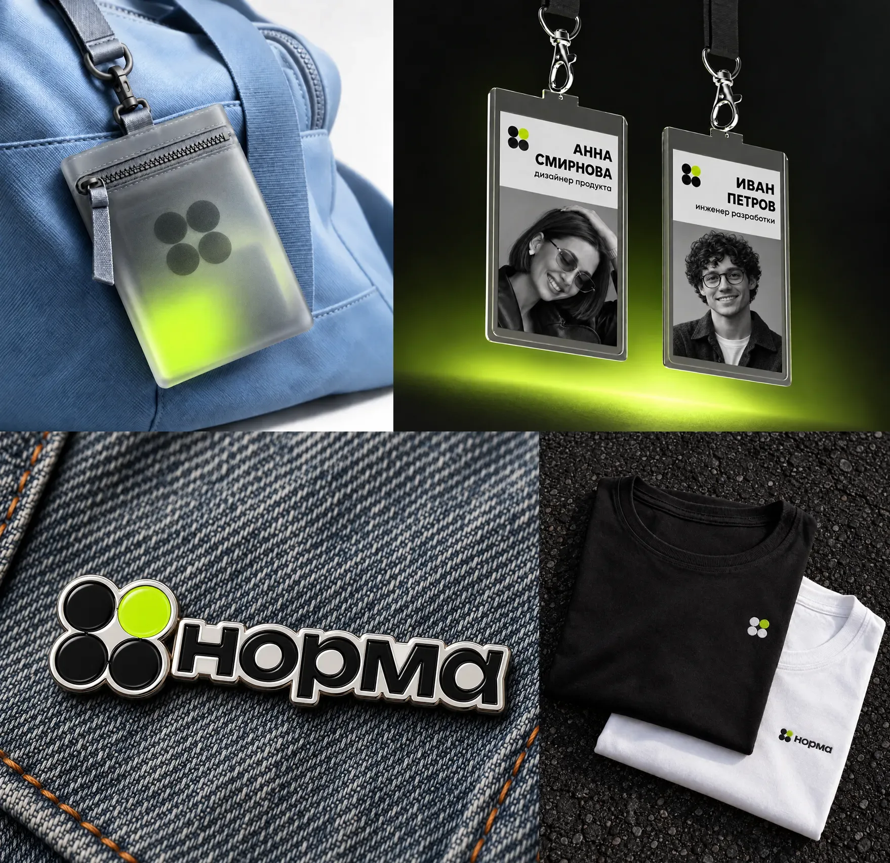
результат
20+ фреймов на обновлённом UI kit, короткий user flow, логобук и гайдлайн знака. Новые продукты «Нормы» можно собирать на этой системе, не пересобирая стиль.
Нужен похожий продуктовый UI для финтеха — пишите :)